Features
Everything you need to build for .NET. Nothing to bolt on.
Write, run, debug, test and ship from one native IDE on Windows, macOS and Linux. Each area below shows what stands out; open its full list for everything else.
Editor and navigation
C# on Roslyn, the way you know it.
Completion, refactorings and navigation that understand the whole solution, in the classic IDE's layout.
- IntelliSense with Quick Info, parameter info, inlay hints and CodeLens
- Refactorings and code fixes, each with a preview of the change
- Find All References, Go to Implementation and Code Search across the solution
- Your analyzers, source generators and .editorconfig
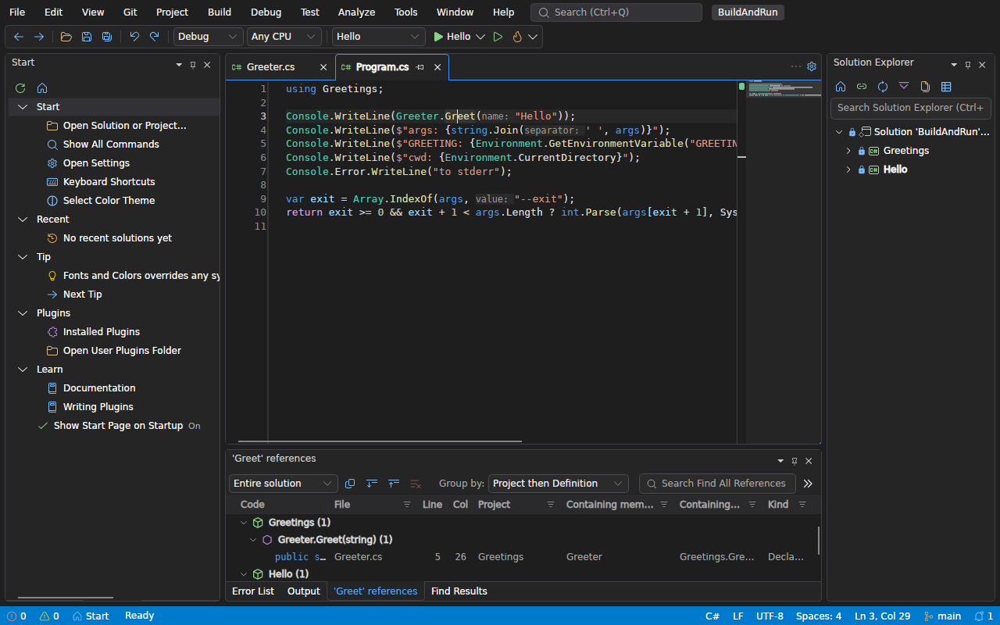
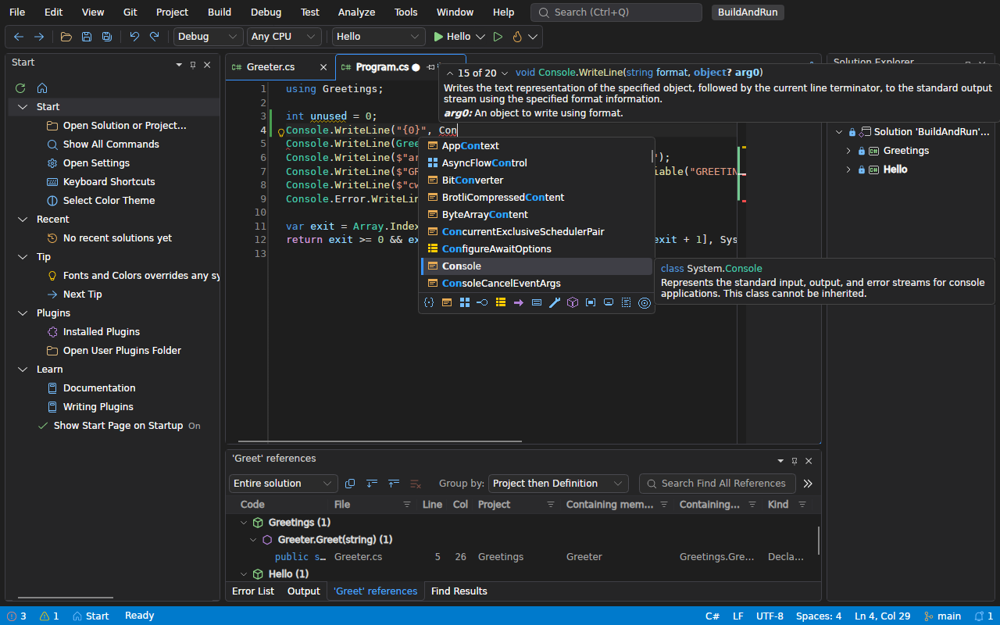
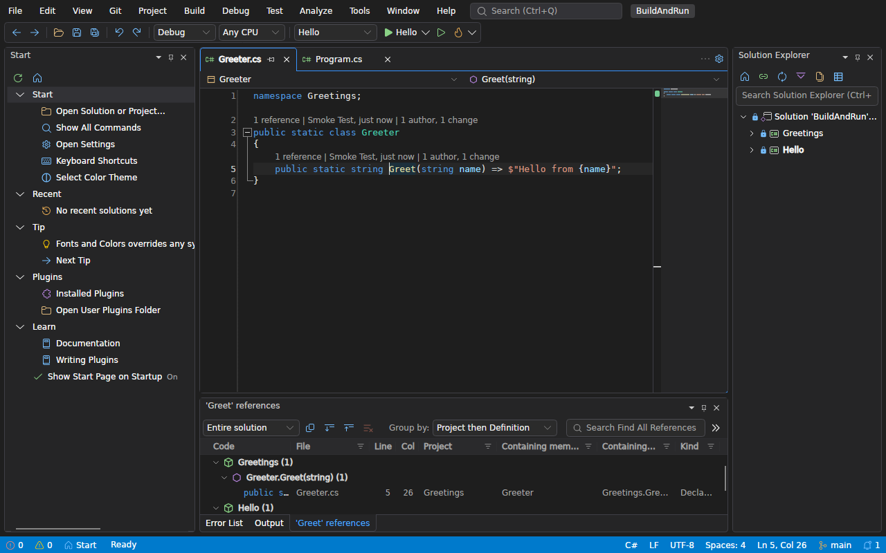
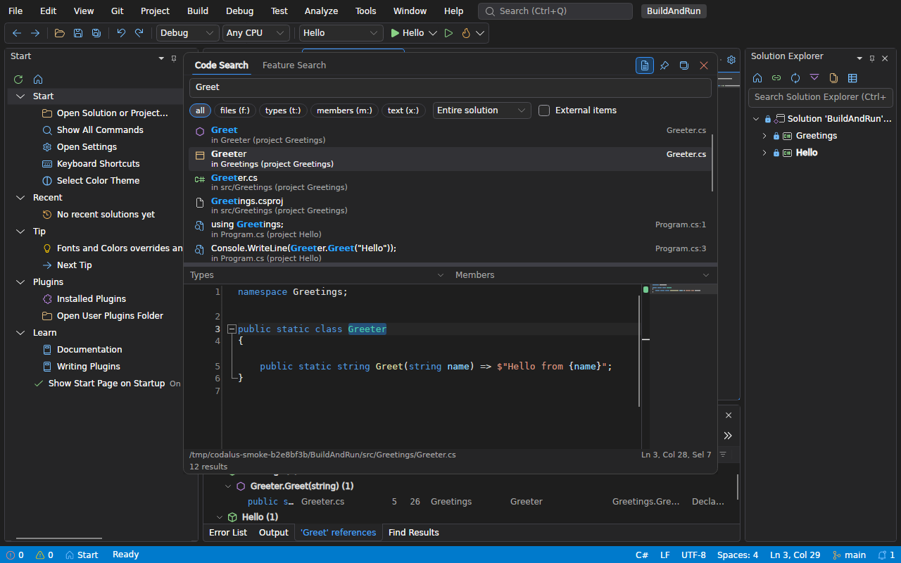
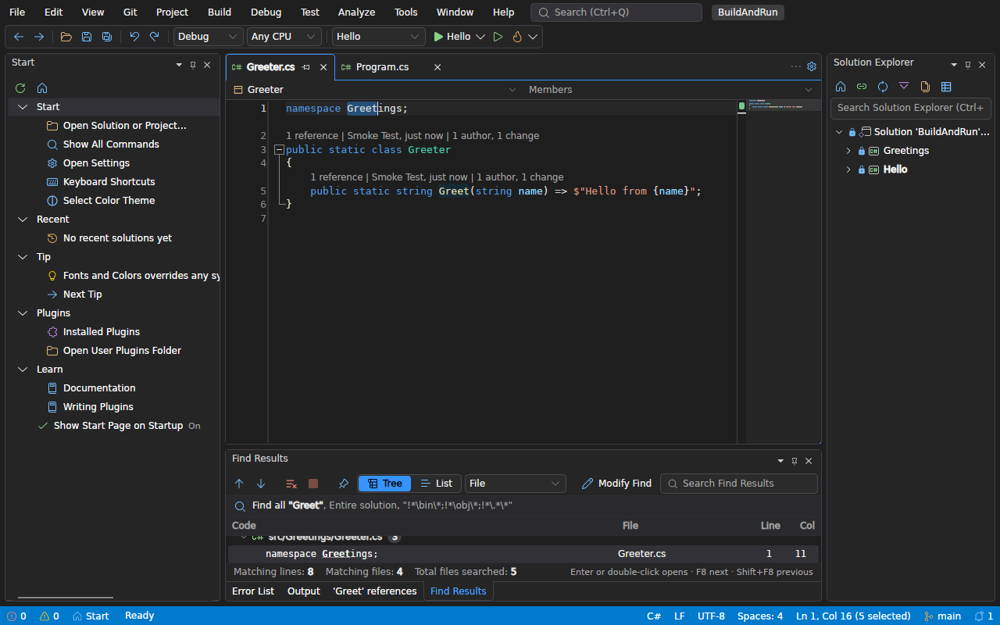
All 18 features in Editor and navigation
- Tabs with preview and split views, pinned tabs on a row of their own, a list of every open document beside them, and tabs on the top, left or right, in multiple rows, colored by project or file extension; multiple carets (tens of thousands at once), folding and a minimap
- Minified files and huge logs open without freezing: lines are drawn to 10,000 characters with all their text kept, and files over 20 MB or 300,000 lines open in a large-file mode
- Semantic highlighting, and IntelliSense like a classic IDE's: a completion list with an icon per kind, filters (Alt+C classes, Alt+M methods…, Alt+J target type matches), commit characters (Con then . gives Console.), the expected type preselected, and a description beside the selection; parameter info above the line with overloads and the active parameter in bold; Quick Info with fixes for the errors under the pointer. Signatures in your editor's colors, generics as you use them
- Live diagnostics and an Error List, grouped by project, file, severity or code, with background analysis of open documents, the current project or the solution; filtering and grouping 100,000 diagnostics doesn't make you wait
- Rename, code fixes and refactorings, all with previews
- Brackets that close themselves, Enter between braces that opens an indented line with the C# brace where your .editorconfig puts it, snippets, Code Cleanup, format on save and local history
- Closing tabs, the solution or the IDE with unsaved files asks once, in a dialog that lists them under their solution and project, with a check box for each file to save
- Pasted code brings its usings along; editor settings per language, and an EditorConfig settings page
- CodeLens with references, Git history and test status, its rows in place from the moment a C# file opens, so the code doesn't jump
- Go to Definition and Implementation, into decompiled code
- Navigate Backward and Forward through the documents and places you were, from the toolbar, the keyboard or the mouse's back and forward buttons
- Find All References as the classic IDE shows it: grouped by project and definition, the classic IDE's columns with resizable widths and per-column filters, a scope box, and Keep Results opening another window
- Code Search: files, types, members and text in one window, with filter chips, a live, editable preview, and an index kept with the solution so it finds everything right after a restart
- Feature Search for commands, settings and Options pages, from the search box
- Peek Definition, Call and Type Hierarchy, Class View and the Object Browser
- Find and Replace in Files: a floating window, and results in the editor's colors with every match highlighted, grouped by folder and file as a tree or listed, filtered and kept
- Inlay hints, CodeLens, an inheritance margin and sticky scroll
- Library code from Source Link before decompiling
Debugging
A debugger made for .NET.
Our own debugger on every desktop, from .NET Core to .NET 11 and .NET Framework.
- Conditional breakpoints, hit counts and logpoints; data tips, Watch and Locals
- PerfTips, the Call Stack, Threads, Modules and Exception Settings
- Edit while paused with Hot Reload; Blazor debugged in the browser
- The same debugger over SSH, in WSL and in containers
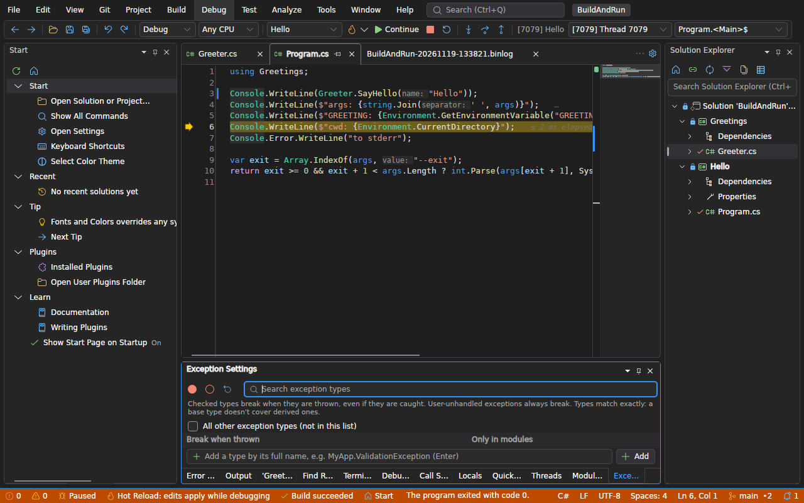
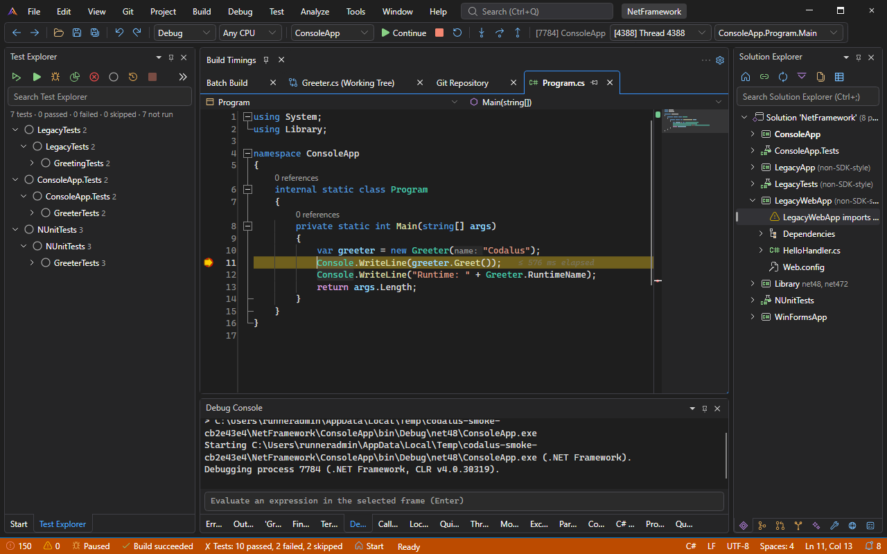
All 18 features in Debugging
- Launch (F5) and attach, stepping and threads
- Conditions, hit counts, logpoints and dependent breakpoints
- Text, JSON, XML and HTML visualizers, and [DebuggerDisplay]
- Data tips like a classic IDE's: the header over the hovered expression, each expanded level a tip of its own, members grouped with their icons, List, Dictionary, HashSet, Queue and Stack as their elements, View drop-downs for visualizers, values edited in place and red when they changed, any row pinned, and Ctrl to see through them
- Pinned data tips that expand like the data tip, PerfTips and Run to Click
- Async code stepped like the rest: Step Over an
awaitstops on the next line once it resumes, on any thread, for state machines and .NET 11's runtime async alike - The async call stack: below a resumed method's frames, the methods awaiting it, at their
awaitlines and with their variables - Inline values: each line's variables drawn after it at a stop, the ones a step changed highlighted
- Locals, Autos, Watch and QuickWatch with the data tip's rows: Name, Value and Type in aligned columns at every depth, expansion kept across steps, values edited in place
- Long arrays in ranges of 1,000, each read as you expand it, and debugger windows behind other tabs that wait until you show them
- Dumps, Parallel Stacks and Parallel Watch, and Just-In-Time crash dumps
- Attach over SSH, in containers and in WSL; console apps in the integrated terminal
- Blazor WebAssembly in Chrome, Edge or Chromium
- A .NET debugger of Codalus IDE's own, the Codalus debugger, on .NET and .NET Framework (netcoredbg stays one release as a fallback, a setting away): Hot Reload while debugging (edits apply as you continue, save or press Alt+F10, and the program's update handlers run; a Blazor Web App's server and its WebAssembly components in the browser included) and Edit and Continue (the method you're stopped in goes on in its new code)
- Set Next Statement, Step Into Specific, returned values, frozen threads and object IDs; hit counts and logpoints without a stop per hit; lambdas, LINQ and the rest of C# in Watch and conditions, and Visual Basic in Visual Basic code; [DebuggerTypeProxy] and Results View
- Disassembly, Registers and Memory windows for managed code on x64 and arm64; symbol paths and symbol servers (off until you turn one on); Windows PDBs
- Several startup projects in one debug session, where a stop in one program pauses the others
- The same debugger on Linux machines over SSH, in containers and in WSL, copied there when you agree
Build, run and test
From F5 to a green test run.
MSBuild builds you can cancel, and a Test Explorer that keeps up with tens of thousands of tests.
- A Test Explorer for xUnit, NUnit, MSTest and TUnit, with test margins in the editor
- Code coverage with Coverlet
- Launch profiles, multiple startup projects and Batch Build
- Binary logs, build timings and a fast up-to-date check
All 8 features in Build, run and test
- Build, Rebuild and Clean on MSBuild, cancellable
- Colored output: errors, warnings and successes in your theme's colors, standard error in red, and programs' ANSI colors shown as colors
- A fast up-to-date check, binary logs and build timings
- Batch Build, build events, and custom tools for ResX and T4, with a resource editor for .resx files
- Run with Ctrl+F5, and multiple startup projects
- Stop from the click: while F5 or Ctrl+F5 builds, the toolbar says so with a running bar, and Stop cancels the build
- A Test Explorer for xUnit, NUnit, MSTest and TUnit that keeps up with runs of tens of thousands of tests, with output streamed as they run and a details pane that shows any length of it
- Code coverage with Coverlet
AI assistance, your way
Your agent, with the whole IDE behind it.
Off until you turn it on. Then your own key, a model on your machine, or the coding agent you already use.
- Claude, Codex, Gemini CLI or GitHub Copilot, connected from one dialog
- An MCP server that gives agents the compiler, tests and debugger
- AI Chat with @-mentions, and each agent's own CLI in AI Console
- Every change previewed, every command approved, secrets never sent
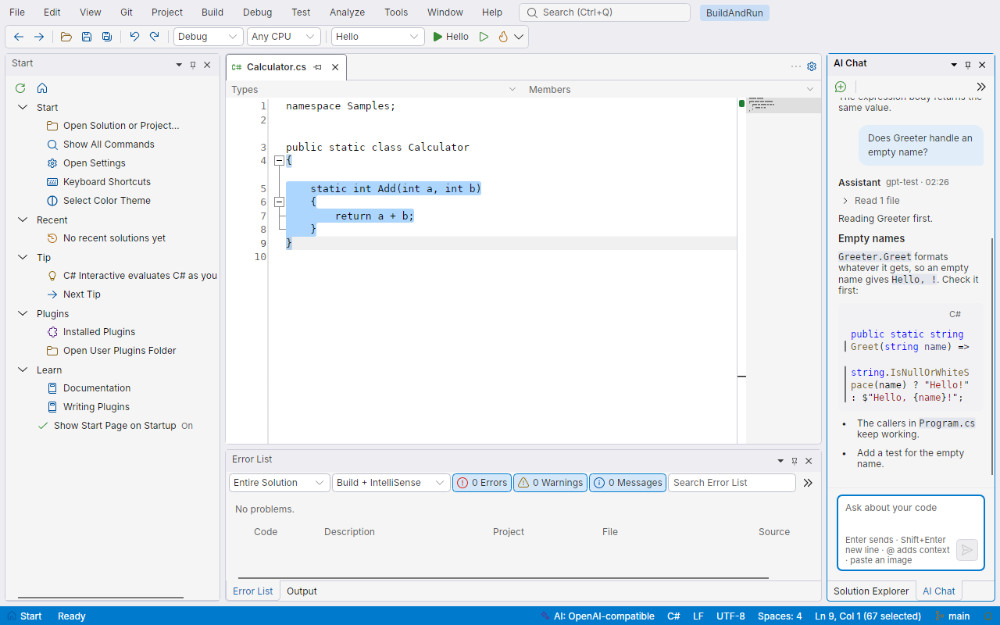
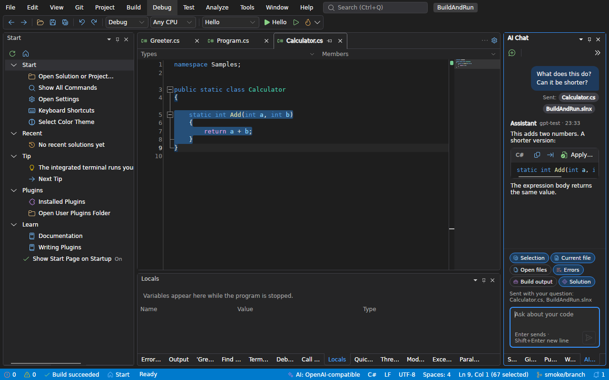
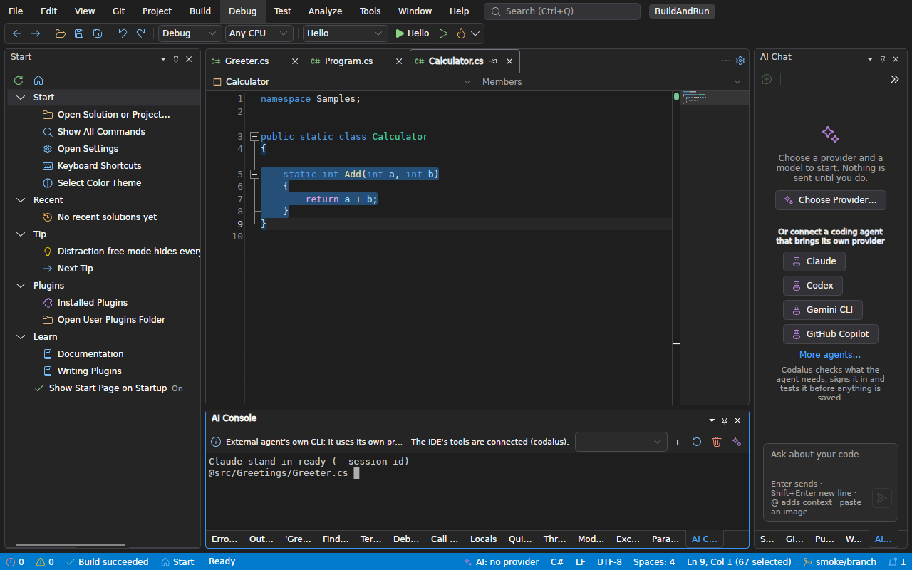
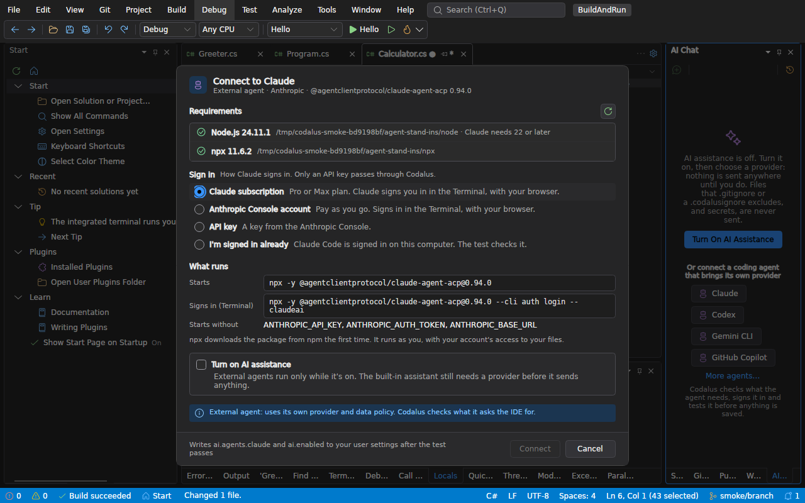
All 17 features in AI assistance, your way
- Off until you turn it on, with no telemetry; nothing is sent until you choose a provider
- OpenAI-compatible servers, Ollama on your machine, Anthropic, or a provider plugin; your key in the OS credential store
- AI Chat that stays out of the way: each answer's steps fold into one line (or show in full, one click away), thinking is a short line, and questions you type while an answer runs wait in a queue
- Context by @-mention:
@selection,@errors,@build, any file of the workspace, and pasted screenshots for agents that take images, shown with each question - Answers in rendered Markdown, with code blocks in your editor's colors that wrap to the pane and fold when long
- Inline suggestions and next edit suggestions, each with its own switch, and a suggestion on demand at the caret (Alt+\) with dots while it thinks
- Commit messages, pull request descriptions, Ask AI on an exception, a value at a stop or a failing test, Fix with AI and Explain with AI in quick actions and the Error List, tests for the selection, and profile summaries
- The assistant is always an agent: it reads, searches, builds, tests and edits, each step shown in the chat, every change in a preview and every command after you allow it; without a trusted folder or a model that takes tools, it answers without them and says so
- The IDE's tools for every agent: find symbols, references, implementations and callers through the compiler instead of grep, build, run and read tests, start the program, debug it with breakpoints, variables and steps, and drive a web app's page (under the debugger, the very page being debugged, so its breakpoints stop); every step waits for the app and says where it stands, agents check their own changes, and actions run in trusted folders or ask, as you choose
- More of the IDE for agents: rename and the light bulb's fixes through the compiler, formatting and Replace in Files, Hot Reload, CPU profiles and memory snapshots, Git without pushes, NuGet packages and EF Core migrations, compose services and Aspire resources, and the IDE's own commands, each change one undo step and shown in the IDE's windows
- The desktop app you're building, for agents: an Avalonia app (or a WPF app on Windows) run or debugged from the IDE, its windows with a picture of each, its controls with their text, state and bounds, and clicks, text, keys and scrolls sent inside the app without moving your pointer or taking your focus; off-screen under Xvfb on Linux
- Under each answer, the files it changed, each with a diff against before and Revert
- MCP: your MCP servers' tools in agent mode,
codalus mcpwith the IDE's tools for agents outside the IDE (asked once per folder, with progress for long calls and each agent's setup to copy),codalus mcp --folderfor an agent that runs unattended (an IDE without a window on a trusted folder, its actions only when you allow them), and plugins that add tools of their own - External agents in AI Chat over the Agent Client Protocol (Claude, Codex, Gemini CLI, GitHub Copilot, pi, OpenCode, goose, your own CLIs): Codalus serves their file, terminal and permission requests with its own checks, gives each one the IDE's tools, and offers the agent's own model, mode and effort choices. The agent picked in AI Chat answers inline suggestions, next edits and every AI action too, with no provider needed, in a session of its own that gets no tools
- AI Console: the agent's own CLI (Claude, Codex, Gemini CLI, GitHub Copilot, pi, OpenCode, goose) in a console at the bottom, beside the Output and the Terminal, with the IDE's tools connected where the CLI takes them, tabs that come back with their conversations, and Add Selection to send it a reference instead of the text
- Connect to Claude, Codex, Gemini CLI or GitHub Copilot from AI Chat in one dialog: it finds or installs Node.js with your own package manager, signs the agent in (Claude subscription through Claude Code's own login, or an API key kept in the OS credential store), tests the connection in an empty folder, and only then saves it; Disconnect undoes it
- Files .gitignore or a .codalusignore excludes, and secrets, are never sent; a request log of what was
Remote development
Over SSH, in WSL and in Dev Containers.
The window stays on your machine; the code, builds, terminals and debugging run where the code lives.
- Your own ssh: your config, keys and agent, never a password
- Reopen in Container for a repository's devcontainer.json
- F5, tests and terminals there; its ports forwarded to localhost
- Reconnects by itself after a network drop, with nothing lost
$ codalus --remote ssh:me@build-box /home/me/src/App $ codalus --remote wsl:Ubuntu /home/me/src/App $ codalus --remote container:web /app
All 8 features in Remote development
- A remote window on code that lives elsewhere: another machine over your own ssh (your config, keys and agent, never a password), a WSL distribution, or a running container through docker or podman
- The editor and your typing stay here; projects, builds, the C# language service, terminals, running and debugging happen on the other machine, in a small server copied there and checked by its SHA-256
- Dev Containers: Reopen in Container builds or pulls the image, mounts your folder, runs postCreateCommand once, and reuses the container next time
- F5 and Ctrl+F5 on the other machine, with the debugger copied there when you agree
- Ports a program there listens on, forwarded to localhost and opened in the browser, with a Ports window
- The Test Explorer and workspace plugins run there too, and a local solution's tests run in WSL, Docker or over SSH without a remote window
- Reconnects by itself after a network drop or a laptop's sleep, with nothing lost or repeated: the server keeps your solution, programs, terminals and debugging sessions for 15 minutes
- From the command line:
codalus --remote ssh:me@build-box /home/me/src/App
Git and hosting
Git and pull requests, built in.
The classic IDE's Git windows, fast with thousands of files and branches.
- Per-line staging, blame, a history graph and interactive rebase
- A 3-way merge editor with the merge base in the result
- Every repository of a solution in one Git Changes
- GitHub, Azure DevOps and GitLab pull requests, reviewed in the editor
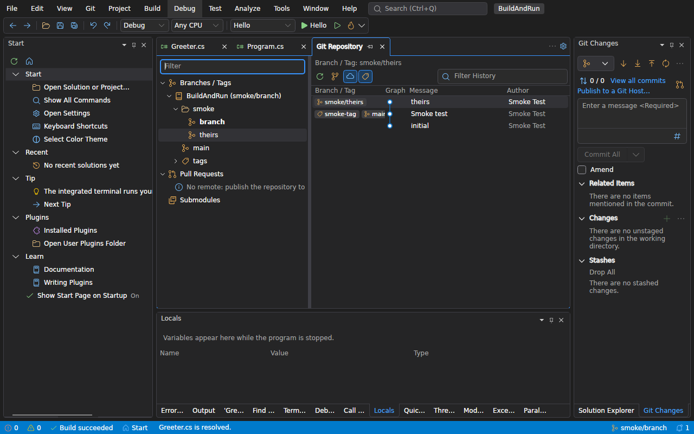
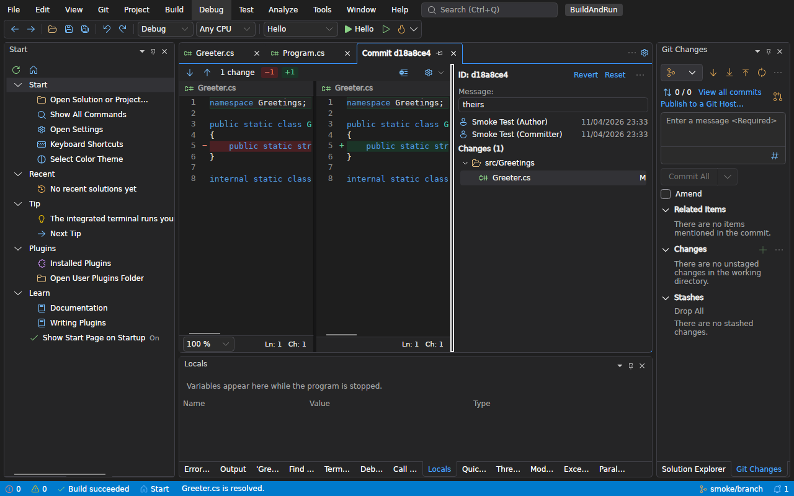
All 17 features in Git and hosting
- Per-file, per-change and per-line staging, from Git Changes or the diff, and blame
- Git Changes with thousands of changed files: only the rows on screen are built, and a refresh keeps your selection, scroll position and collapsed folders
- Open a changed file from Git Changes at its first change
- Diffs and the merge editor in the editor's colors; diffs open at their first change, with Quick Info and CodeLens on the working tree
- A branch drop-down in Git Changes: search, outgoing and incoming counts, and each branch's own menu (checkout, merge, rebase, update, push, rename, delete, compare)
- Update a branch from its remote without checking it out
- Manage Branches, the classic IDE's Git Repository window: every branch in folders, the remotes, tags, open pull requests and submodules in a tree, and the selected branch's history with its incoming and outgoing commits; thousands of branches and tags, or a commit of 10,000 files, open without a pause
- Fetch, pull, push and sync show in Git Changes while they run, with Cancel, as in the classic IDE
- Solutions in several repositories, all in Git Changes at once: a tree per repository, Commit All Repos, fetch, pull and push in each, and the branches every repository has
- A folder's menu in Git Changes, as in the classic IDE: stage, discard, stash, ignore, history, reveal, terminal, copy path
- A history graph in the classic IDE's columns, filtered by message, author or commit ID, with incoming and outgoing commits, each commit's details in a tab of its own (its diff, Revert, Reset, Explain with AI), and any two commits, or a commit and its parent, compared file by file
- Interactive rebase
- A 3-way merge editor: check boxes beside each conflict, the merge base in the result, both versions lined up with it row by row
- Stash, tags, remotes, worktrees and Git LFS
- Pull requests, with review comments in the editor
- GitHub, Azure DevOps and GitLab, and their own servers: Azure DevOps Server found from the remote, signed in to with your Windows account
- Git Changes knows the repository's host and signs you in to it in place, with a link to create the token it needs; then create a pull request from it
Web
ASP.NET Core and Blazor.
C# inside your markup, requests from .http files, and the browser under the debugger.
- C# in .razor and .cshtml: completion, diagnostics and Go to Definition
- .http files with the response, its headers and history, beside an Endpoints Explorer
- Blazor's server and WebAssembly debugged as one session
- HTML, CSS, JavaScript and TypeScript servers, ESLint and Prettier
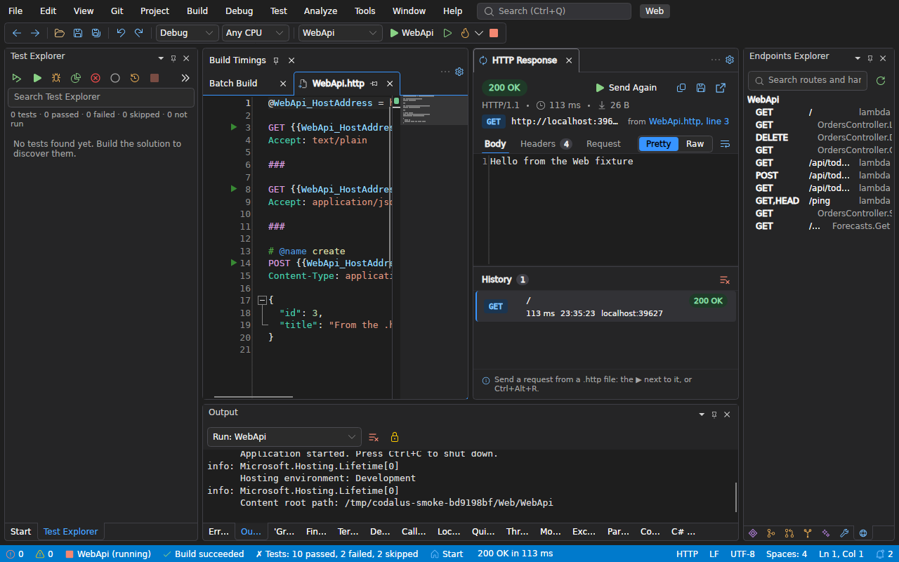
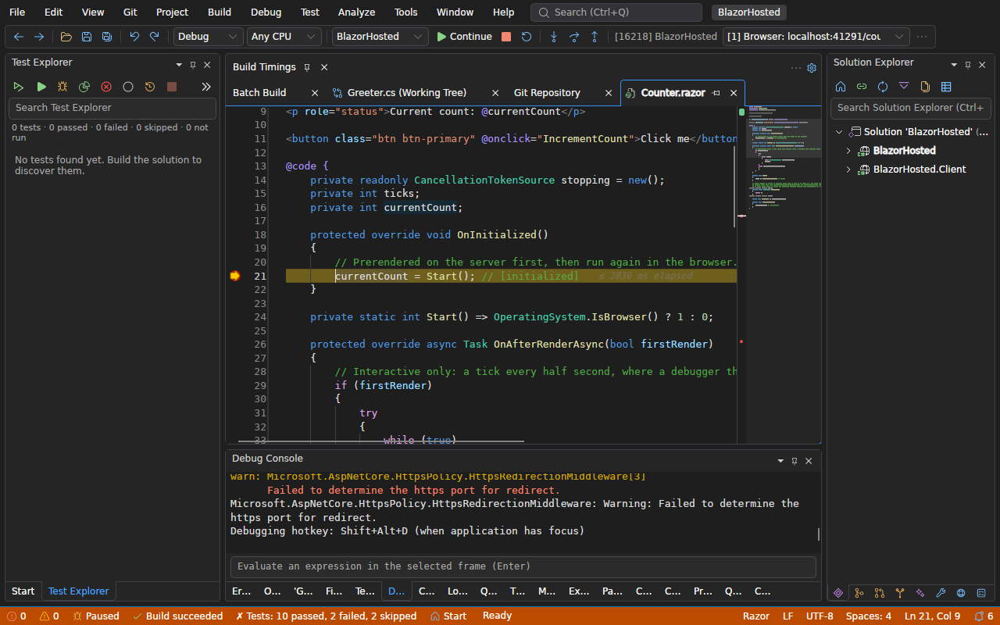
All 6 features in Web
- Razor and Blazor, with C# features inside the markup and components and their parameters, HTML and directives each in their own color
- .http files, the HTTP Response window beside them (the status as a chip, the body pretty or raw, the headers, a history of requests) and an Endpoints Explorer
- HTML, CSS, JavaScript and TypeScript language servers
- ESLint, Prettier, npm scripts and the Task Runner Explorer
- Hot Reload through dotnet watch, and while debugging Blazor WebAssembly components, standalone or in a Blazor Web App (its server launched under the Codalus debugger, which sends the page its edits)
- Scaffolding, OpenAPI and gRPC service references, the dev certificate and user secrets
Desktop and mobile apps
WPF, Windows Forms, WinUI, Avalonia and .NET MAUI.
Designers and previewers that run on your app's own framework, as you type.
- A WPF XAML Previewer and the Windows Forms designer, on your app's own runtime
- WinUI 3 with x:Bind checked against the page, and packaged apps
- Avalonia's previewer and Live Visual Tree on every desktop
- .NET MAUI on Android everywhere; iOS and Mac Catalyst on macOS
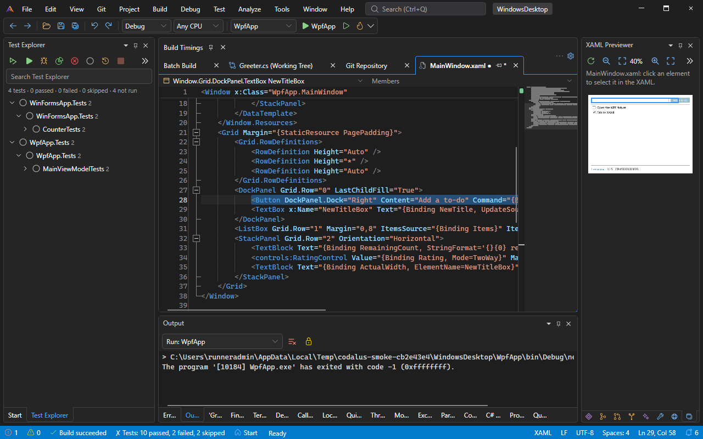
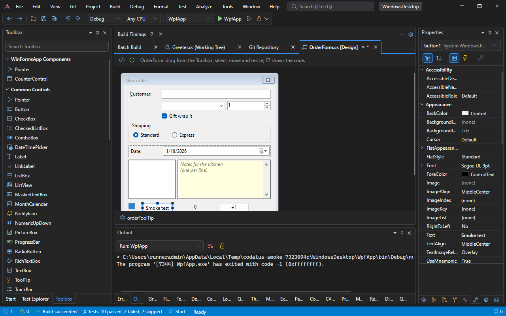
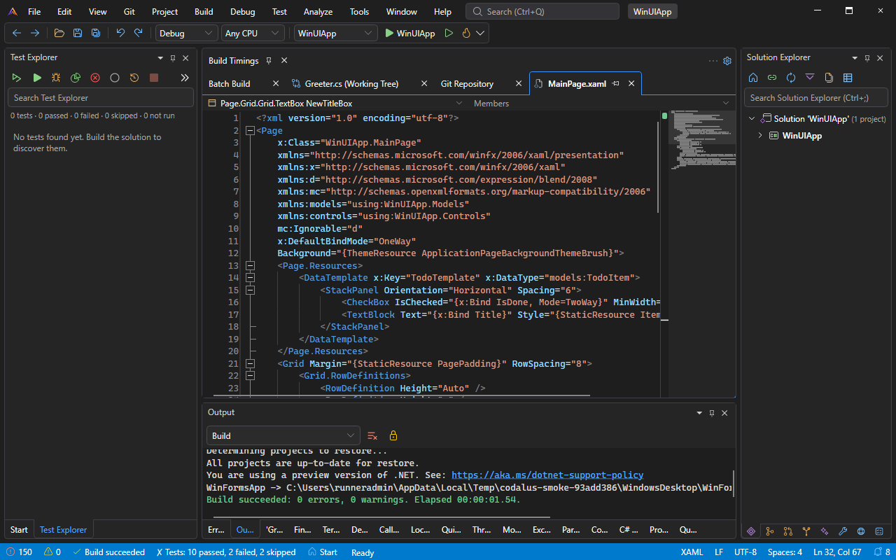
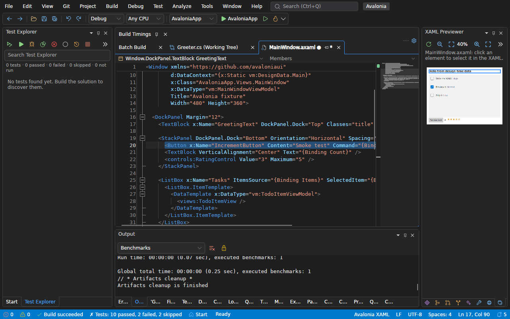
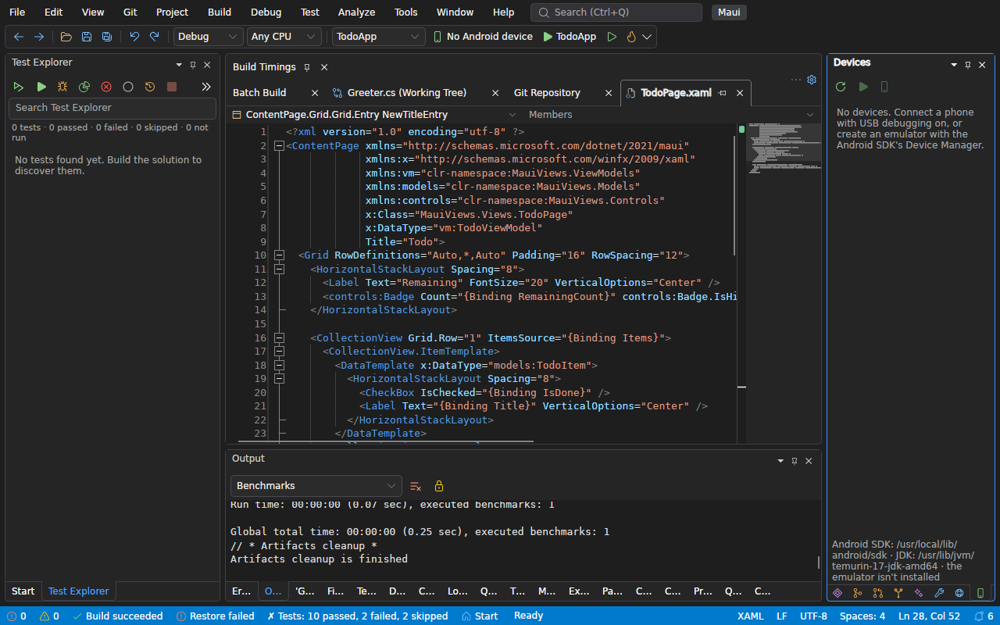
All 31 features in Desktop and mobile apps
- WPF and Windows Forms projects open, edit and build on Windows, Linux and macOS
- Run, debug, test and Hot Reload them on Windows; elsewhere the IDE says they're Windows only
- WPF XAML: completion of controls, dependency and attached properties, markup extensions, styles, triggers and resources through App.xaml and merged dictionaries
- Binding paths from d:DataContext, checked as warnings; the markup compiler's errors in their XAML files
- Go to Definition, hover, rename across C# and XAML both ways (binding paths, types, event handlers, resource keys), Extract Resource, Extract Style and generate-from-use code actions, and formatting
- On Windows, the XAML Previewer draws WPF XAML on your app's own WPF as you type: design-time data from d:DesignInstance, the design size, zoom and scale, and a click selects the element's tag
- On Windows, the Live Visual Tree and Live Property Explorer for running WPF apps: logical and visual trees, dependency property values with their sources, values set live, highlight, pick and Go to XAML
- On Windows, XAML Hot Reload for running WPF apps when you save, failed bindings in the Error List at their XAML lines, and XAML breakpoints, Break When Value Changes and the style explanation
- On Windows, the Windows Forms designer on your app's own Windows Forms: select, move, resize, nudge, copy and paste controls, the Toolbox with an icon for every control and your own controls, the Properties window and its Events view
- The Properties window as the classic IDE's: categories that collapse, Font, Location, Size and Padding opened into their parts (each written as one assignment), color, alignment, multi-line text, shortcut key and date drop-downs, the font editor, the String Collection Editor and Select Resource, choices for AcceptButton and Cursor, Reset, and a component list
- Drag, click or double-click from the Toolbox (or press Enter on an item) to add controls, into the selected container as in the classic IDE
- Build while a form is open: the designer runs on a copy of your build output, as the classic IDE does, and loads the form on the new build after it
- Snap lines, the Format menu (align, make same size, spacing, center, bring to front and send to back, Lock Controls), tab order mode, Dock and Anchor pickers and adorners
- Smart tags with the designers' tasks, menus and tool strips edited in place with Type Here, the component tray, and collection editors for items, columns, tab pages and table styles
- The designer's context menu as in the classic IDE: the designers' own commands (Add Tab, Edit Items...), Bring to Front and Send to Back, Align to Grid, Lock Controls, Select the parent, Cut, Copy, Paste, Delete and Properties, grayed when they don't apply; Edit's commands and Select All in the designer
- Localizable forms designed per language into each culture's .resx, images imported into the form's or the project's resources, extender properties such as ToolTip on toolTip1, and data binding to a BindingSource's members
- The designer writes InitializeComponent as the classic IDE does, as the smallest edit of the designer file: undo, local history and source control see only what changed; code it can't read opens as code with the reason
- New WPF and Windows Forms projects; windows, pages, user controls, resource dictionaries and forms in Add New Item, nested with their code-behind
- WinUI 3 apps open and edit everywhere, and build, run, debug and Hot Reload on Windows; packaged (MSIX) apps are registered, started by Windows and attached to, with Developer Mode explained when it's off
- WinUI XAML: x:Bind paths checked against the page's class as errors, x:Load and x:DefaultBindMode, ThemeResource and resources through App.xaml's merged dictionaries, WinUI's compiler errors in their files
- Android devices and emulators on Windows, Linux and macOS; iOS simulators, iPhones and Mac Catalyst on macOS; Windows Machine (the Windows target) on Windows
- A device picker on the toolbar and a Devices window: start emulators, boot simulators, choose where the app runs
- Build, deploy and run with the platform SDK's own run target
- Debug on Android devices and emulators, iOS simulators and Mac Catalyst with our own Mono debugger: breakpoints, stepping, locals, watch and exceptions
- MAUI XAML: completion, compiled binding paths from x:DataType, live errors, hover and Go to Definition
- Android Device Manager: create, start, cold boot, stop, wipe and delete emulators, and edit their memory, storage and graphics
- Android SDK Manager: install, update and uninstall platforms, system images and tools, after their licenses
- Device Log: logcat and the iOS simulator's log, filtered by level, text or your app; the adb Command Prompt; Open Simulator and Xcode on a Mac
- The MAUI workloads, the Android SDK and a JDK installed when you agree (elevated when the SDK is in Program Files), and listed in Check Environment
- The Windows target runs and debugs as a desktop app (Hot Reload with dotnet watch), packaged or unpackaged
- Avalonia XAML editing, a live previewer and the Live Visual Tree; XAML Hot Reload into the running app when you save, failed bindings in the Error List at their lines, rename across C# and XAML both ways, Extract Resource, Extract Style and generate-from-use code actions; XAML breakpoints at an element's creation or an attribute's set, Break When Value Changes, a break at a failed binding, and why each style applies or doesn't
Data, containers and cloud
Databases, containers and Aspire.
Your docker or podman, your dotnet-ef, and an Aspire AppHost with every project under the debugger.
- EF Core migrations and model views, and a Database Explorer
- Run and debug in containers, and every service of a compose app
- Aspire AppHosts and their resources, among your documents
- Publish profiles, including container images
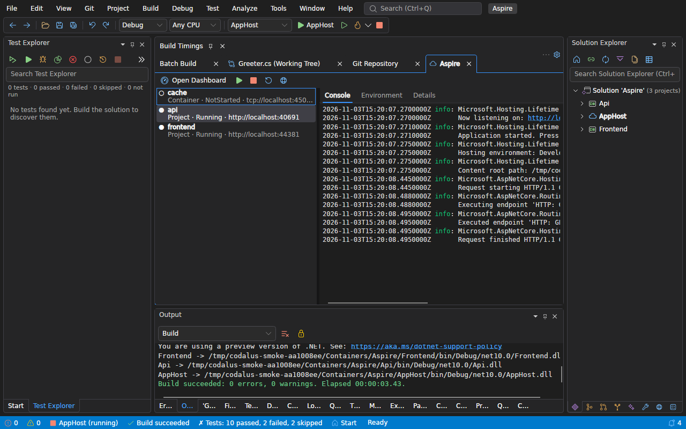
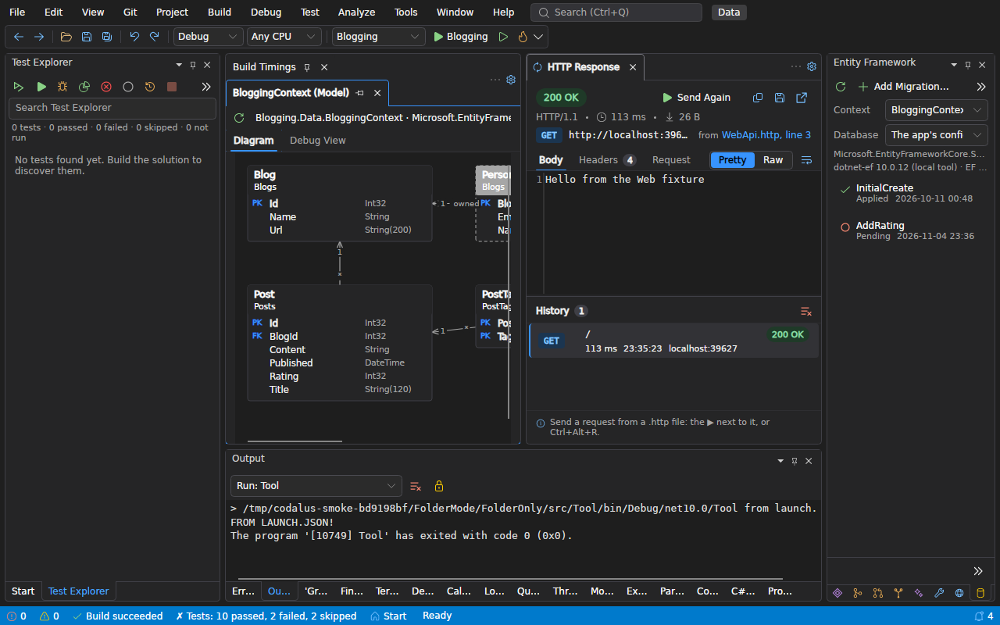
All 8 features in Data, containers and cloud
- EF Core migrations, model views and reverse engineering
- A Database Explorer for SQL Server, PostgreSQL, MySQL and SQLite
- A query editor with plans and history, a SQL language service and .sqlproj builds
- Run and debug in containers with docker or podman; Add Docker Support; Compose up and down
- Every .NET service of a compose app on your Debug build and under the debugger in one session, without an image build; restart, stop, debug or detach one service while the others run, and apply code changes in its container
- Profile a compose service in its container on Linux: CPU, counters, allocations and memory snapshots, through its diagnostic port
- Aspire AppHosts and their resources, on a page among the documents, with every project under the debugger, or one alone
- Publish profiles, including container images
Solutions and NuGet
A real project system.
.sln and .slnx on MSBuild, with the classic IDE's wizards, property pages and package manager.
- .sln, .slnx, solution filters, and every .NET from .NET Core 2.0 to .NET 11
- Property pages that show where each value comes from
- NuGet: browse, update and consolidate, Central Package Management
- New Project as the classic IDE's three-page wizard
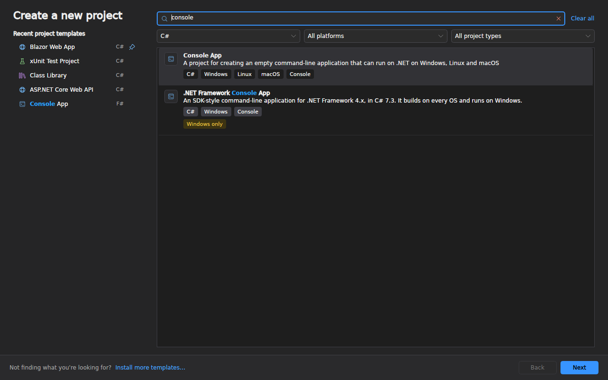
All 14 features in Solutions and NuGet
- .sln and .slnx, SDK-style projects and solution filters
- Property pages that show where each value comes from
- Launch profiles, Configuration Manager and Reference Manager
- Browse, update and consolidate packages; Central Package Management
- nuget.org's verified owners: a badge after a package whose ID prefix nuget.org reserved for one of its owners, shown only when it can be nobody else's copy (never from a mirror), and search that leaves out what package source mapping wouldn't restore
- New Project as the classic IDE's three-page wizard: recent templates, search and filters, each template's own options, and the framework with its support
- The Properties window, Show All Files, Sync with Active Document and Track Active Item, Add New Item, templates and External Tools
- Show All Files as in the classic IDE: bin, obj, node_modules and the other folders outside a project shown dimmed and listed when you expand them; Sync with Active Document and Track Active Item jump straight to the file, in solutions of hundreds of projects
- Folder mode for a folder without a solution: each folder is listed when you expand it, so a folder of any size opens at once, and the search box searches all of it in the background
- A solution reopens as you left it: documents, breakpoints, bookmarks, configuration and the Solution Explorer's expansion, kept in a self-ignoring .codalus/state next to it
- .NET 11 projects with C# 15, every framework from .NET Core 2.0 to .NET 10, and older SDKs in global.json
- A start window with your recent solutions, pinned and searchable, that shows at once: an entry on a network share that doesn't answer never holds it up
- Check Environment: a missing .NET SDK or git offered to install, and the .NET runtime Codalus itself needs: one notification that installs it and starts the helper processes again
- Install .NET where your terminal's
dotnetis: Microsoft's .pkg on macOS, your distribution's package or the snap on Linux, winget on Windows, ordotnet-installinto your home folder, picked for your machine, with each way's command shown
.NET Framework, Visual Basic, F# and WCF
The code you already have.
Old-style projects, other .NET languages and WCF services, without a second IDE.
- net48 projects build on Windows, macOS and Linux; debug them on Windows
- Visual Basic and F# with their own language services
- Convert to SDK-Style after a preview of every change
- WCF service references and a WCF Test Client
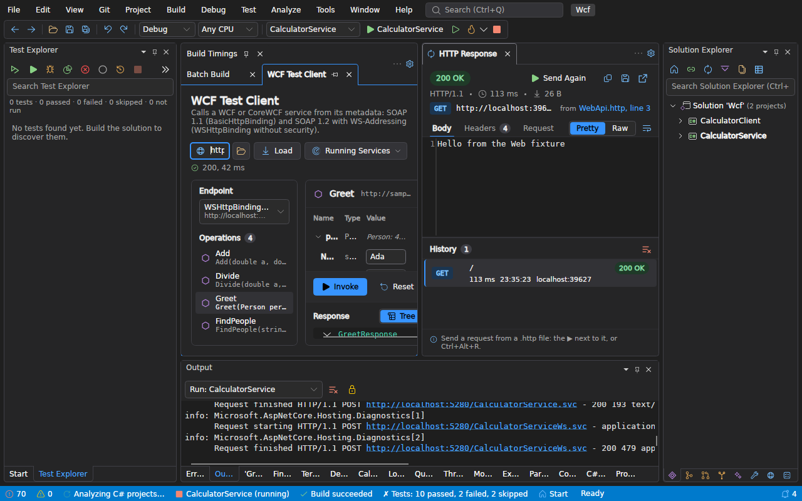
All 28 features in .NET Framework, Visual Basic, F# and WCF
- net48, net472 and the other .NET Framework projects open, restore and build on Windows, Linux and macOS, with no targeting pack: the reference assemblies come from NuGet
- Old-style (non-SDK-style) projects too: packages.config restored, a Dependencies node of their references, hint paths and packages, built with the .NET SDK's MSBuild
- C# 7.3 in the editor, as the compiler uses it, and binding redirects generated for executables
- Convert to SDK-Style: an old-style project rewritten as an SDK-style one, packages.config as package references and AssemblyInfo.cs as properties, after a preview of every change
- Run and debug .NET Framework apps on Windows with our own .NET Framework debugger, on the debugging API that comes with the .NET Framework: breakpoints with conditions, stepping with Just My Code, call stack, threads, locals and watch with C# expressions and method calls, exceptions, Attach to Process, and portable and Windows PDBs; elsewhere the IDE says it's Windows only
- xUnit, NUnit and MSTest tests on .NET Framework in the Test Explorer on Windows, old-style test projects included: discover, run and debug
- Projects that need the classic IDE's own targets (ASP.NET web applications) open with IntelliSense and say why they don't build
- New .NET Framework console apps and class libraries, and the installed .NET Framework in Check Environment
- Completion, Quick Info, signature help and live errors, from the same language service as C#
- C# and VB projects in one solution: Go to Definition, Find All References and rename across both
- End If, Next and End Sub added as you press Enter, keyword casing fixed, XML literals' end tags closed
- Quick fixes and refactorings, formatting, the outline, folding and snippets
- New Project in Visual Basic, VB item templates, and Option Strict, Explicit, Infer and Compare on the project's properties
- VB tests in the Test Explorer, and debugging with breakpoints, stepping and locals
- FsAutoComplete, Ionide's language server, installed for you: completion with unopened namespaces, Quick Info, live errors and FSharpLint
- Navigation, rename, quick fixes, inlay hints and signature CodeLens
- Fantomas formatting with your .editorconfig
- Solution Explorer in compile order: Move Up, Move Down, Add Above and Add Below; signature files under their implementation
- F# Interactive in the terminal: send a selection, a line, a file or a project's references; reset
- Scripts with #load and #r "nuget:", type providers, F# analyzers
- Expecto, xUnit and NUnit tests in the Test Explorer; debugging F#
- F# item templates and project properties
- Add Service Reference with your dotnet-svcutil: from a service's metadata, a WSDL file or a CoreWCF service you run
- Namespace, collection types, synchronous operations, type reuse and access; Update and Remove
- References kept as the classic IDE keeps them: Connected Services and ConnectedService.json
- CoreWCF services from CoreWCF's templates in New Project
- A WCF Test Client: operations with their signatures, a typed form per operation or raw XML, responses as a tree and faults as chips; BasicHttpBinding and WSHttpBinding
- system.serviceModel completion, hover and checks in app.config and web.config
Make it yours
Classic, and four theme families.
A first-run setup picks your keys, theme and AI experience; everything else is in Options.
- Classic, Harbor, Graphite, Daylight and Ember, each Light, Dark and High contrast
- Default, VS Code, ReSharper and Emacs keyboard schemes
- Import from VS Code or a .vssettings file; settings sync
- Customized menus and toolbars, and saved window layouts
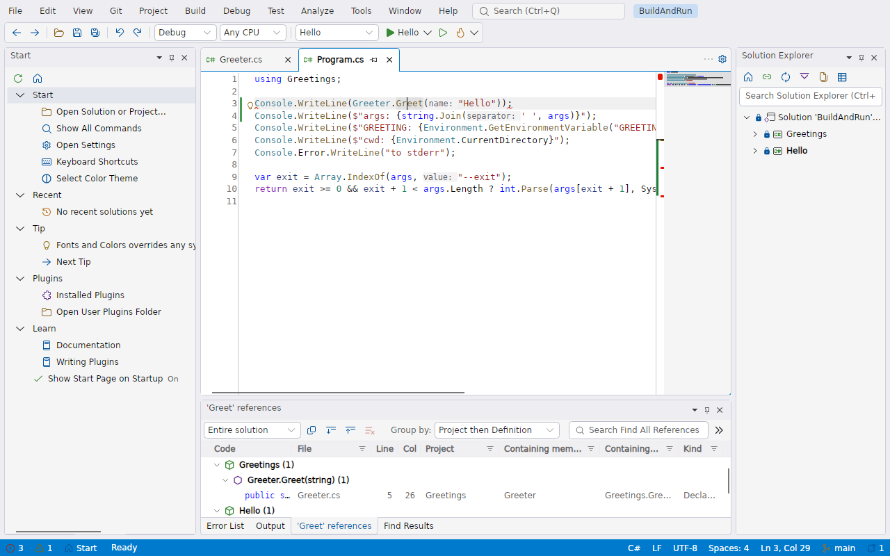
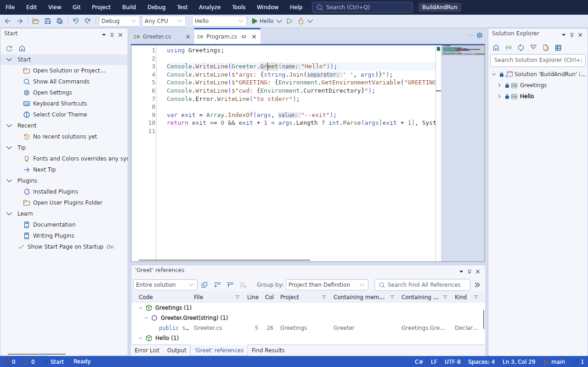
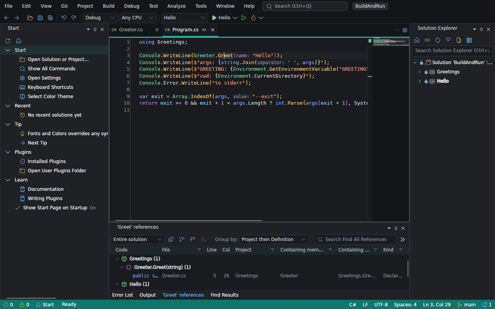
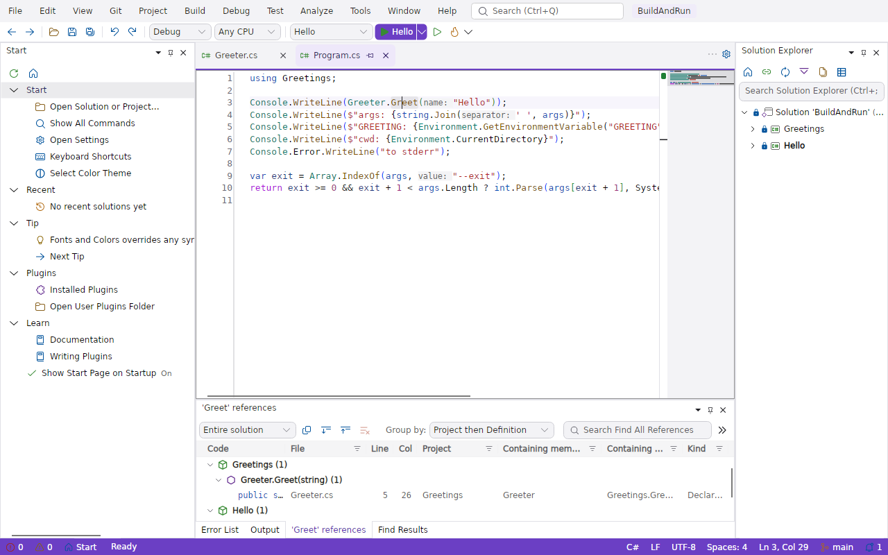
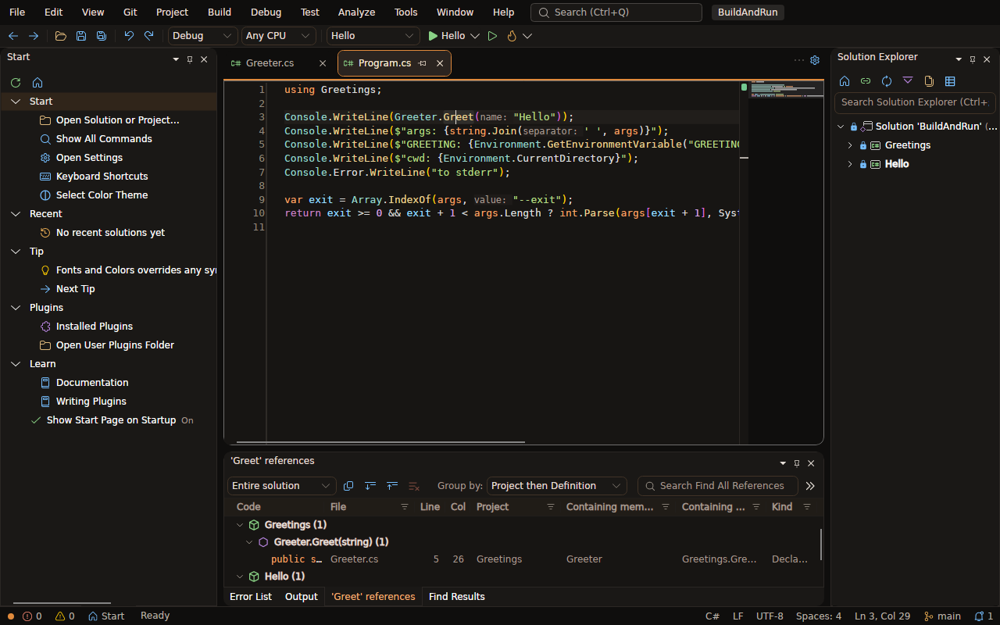
All 9 features in Make it yours
- A first-run setup, before the start window: a welcome page that asks where you come from (the classic IDE, VS Code, Rider) and preselects the matching keys and importer, the theme family and mode previewed live, the editor's font size on a sample, the keyboard scheme, your settings from VS Code, a .vssettings file or settings sync, a check of the .NET SDK and git, the system integration you want, and your AI experience; it ends on a summary with the keys worth knowing
- Your AI experience, chosen at the first start: no AI (the default), a coding agent, or the built-in assistant with a provider you pick, compared side by side by who answers, what it does, what leaves your machine and what it needs; nothing turns on or connects before you finish the setup
- Classic's Blue, Light, Dark and High Contrast, the default, with the classic IDE's rounded cards and editor colors, and four theme families, Harbor, Graphite, Daylight and Ember, each Light, Dark and High contrast, chosen from pictures in Options
- Fonts and Colors over any theme, for code, the editor and the window
- Default, VS Code, ReSharper and Emacs keyboard schemes
- Import from VS Code or a .vssettings file; export to one file
- Profiles, and settings sync with a folder or a Git repository
- Customize menus and toolbars; saved window layouts and distraction-free mode
- Opt-in system integration, off until you choose it and removable: Open with Codalus IDE on a folder's right-click (File Explorer, the Finder, GNOME Files, Dolphin, Nemo, Thunar), and solutions and project files that open in Codalus IDE
And more
Profiling, plugins, a terminal and more.
- Profiling: counters, CPU flame graphs, memory snapshots and .NET Async
- An integrated terminal and C# Interactive
- A stable plugin API, a Plugin Gallery, and any LSP language server
- Screen readers read the IDE's trees
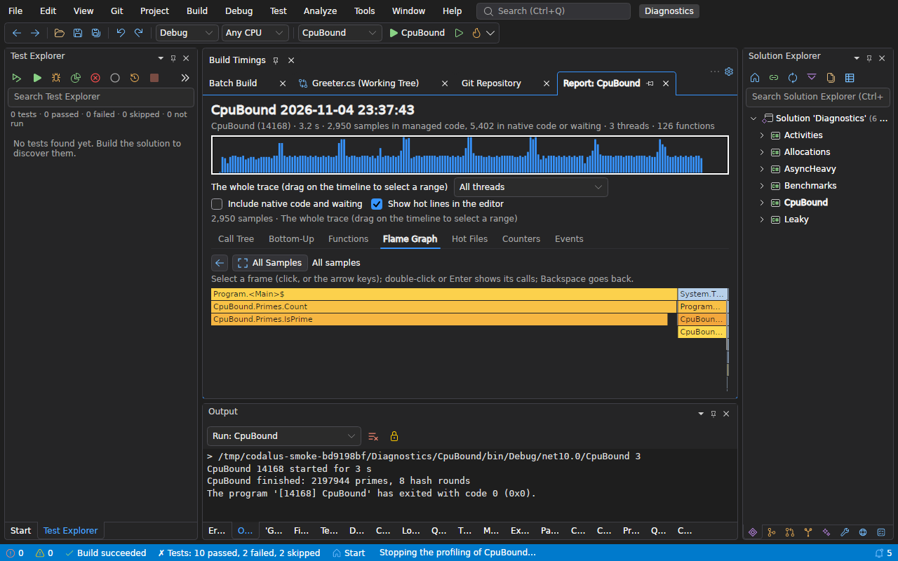
All 12 features in And more
- Profiling: counters, CPU traces and flame graphs, memory snapshots and diffs, allocations, .NET Async, threads, exceptions, file I/O and BenchmarkDotNet
- An integrated terminal and C# Interactive
- About forty languages highlighted; JSON and YAML schemas
- Markdown beside its live preview in the same tab, collapsible, scrolling together, with GitHub's tables and task lists
- Any LSP language server through a plugin, kept in sync in the background: a big file never holds the editor while its text goes to the server
- A stable plugin API (1.0): themes and file icon themes in VS Code's formats, debug adapters, declarative views and custom editors, file system, sign-in and source control providers
- Plugin development: a dotnet new template, in-memory plugin tests, debugging a plugin in a development instance, and a generated API reference
- One Plugins page: the installed plugins to turn off or uninstall, and a Plugin Gallery on NuGet: search, install with the plugin's permissions and signature shown first, automatic updates, and Bisect Plugins to find the one behind a problem
- Components: everything downloaded on demand, with versions, sizes and licences, and offline layouts for machines without internet access
- Running tasks in the status bar: loading projects, restores and builds, with a progress bar and cancel
- Screen readers read the Solution Explorer, Git Changes, the Document Outline, the Git trees, the Test Explorer and Coverage Results as trees, with each row's expanded or collapsed state
- Report a Problem and Suggest a Feature on the Help menu: a GitHub issue filled in for you, with exactly what's attached shown first (the version, the OS and the IDE's log, redacted), opened in your browser to submit yourself
Not there yet: Dev Containers' features and Compose-based Dev Containers, data breakpoints and mixed-mode (native) debugging, and translations of the interface.